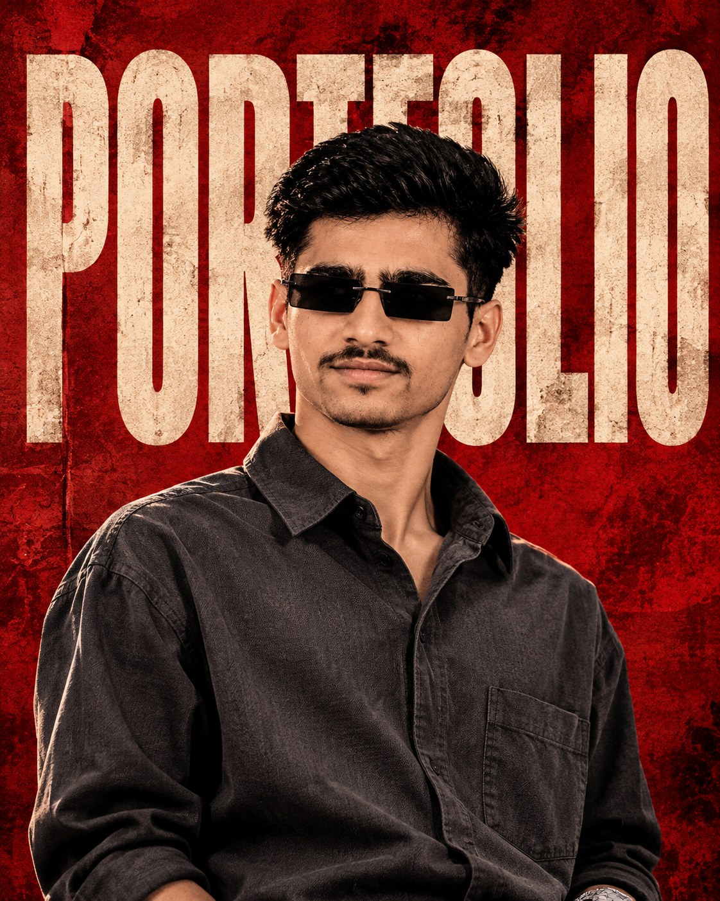

Analytical by nature
Data analysis, cleaning, visualization, and machine learning fundamentals.
OPEN TO ENTRY-LEVEL OPPORTUNITIES
I'm Rahul Koli — a computer science student exploring data science, analytics, and the ideas that turn information into impact.

01 / THE PERSON BEHIND THE SCREEN
I’m a B.Sc. Computer Science student with a growing focus on data science and analytics.
From cleaning and exploring data to building useful web experiences, I enjoy connecting technical foundations with practical problems. I’m looking for an opportunity to contribute, keep learning, and grow through real-world work.
More about me on LinkedInData analysis, cleaning, visualization, and machine learning fundamentals.
Python, SQL, and frontend development — learning through projects and practice.
Adaptable, curious, and excited to contribute to a thoughtful team.
02 / MY TOOLKIT
03 / SELECTED PROJECTS
Academic projects that helped me explore how software can make information more useful.
AI Career Genome Analyzer
Analyzes résumé details and career goals to identify skill gaps, recommend suitable paths, and create a personalized learning roadmap. Includes an admin module for managing users and career data.
Designed to organize customer and vehicle records, service schedules, and maintenance history in one place. Contributed to frontend development and database integration.
04 / THE JOURNEY SO FAR
EDUCATION
KVN Naik Arts, Commerce and Science College
Building a strong foundation in computing while pursuing an interest in data science and analytics.
PROFESSIONAL LEARNING
Fortune Cloude Technology, Nashik
Developing practical knowledge in data science and analytics.
COURSEWORK
Quality Educational Institute of Computer Technologies
A FEW THINGS I BRING
05 / YOUR NEXT TEAMMATE?
I’m looking for an entry-level opportunity where I can learn, contribute, and grow. Have a project or role in mind? I’d love to hear from you.
Say hello